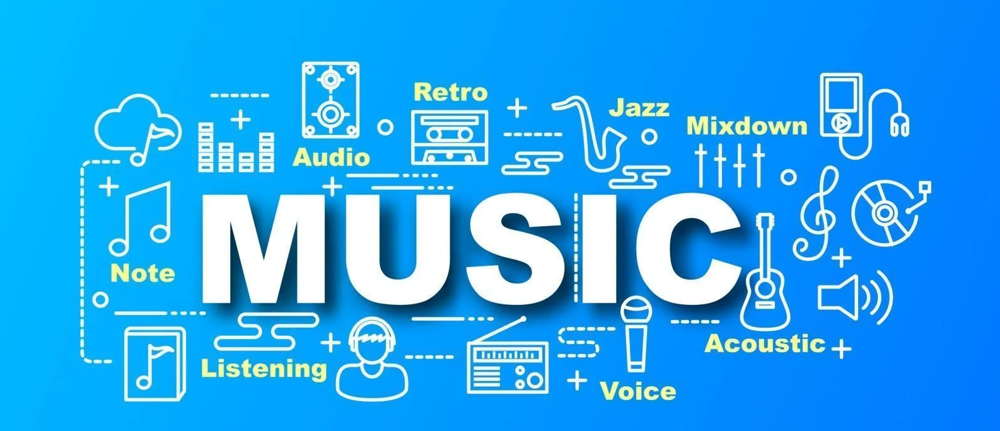
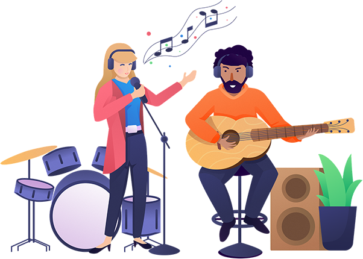
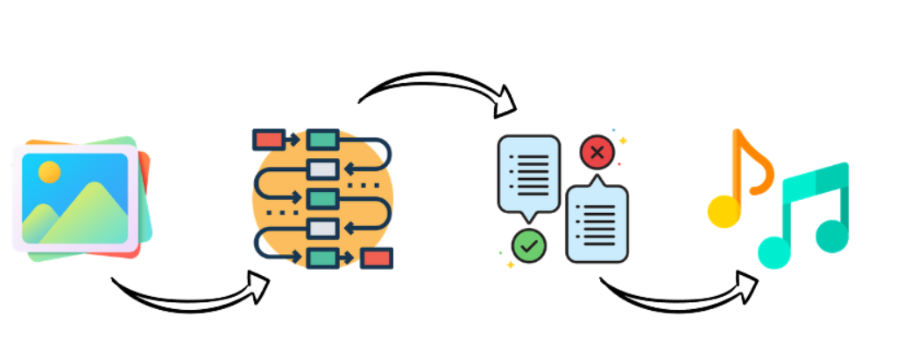

With Smart Music, it’s easy to find the right music for every moment – on your computer, your tablet
and more.
Music has an instant effect on people’s moods, getting them excited, or making them calm and
relaxed. Music is the ultimate way to make people feel nearly all the emotions that we usually
experience in our lives.
Thus, it is clear that music holds a huge significance in everyone’s lives and this is one of the
biggest reasons behind the constant revolutions & technical elevations in the field of music in the
past few decades.


How Is Works ?

It is often confusing for a person to decide which music he/she have to listen from a
massive collection of existing options. There have been several suggestion frameworks
available for issues like music, dining, and shopping depending upon the mood of user. The
main objective of our music recommendation system is to provide suggestions to the users that
fit the user’s preferences. The analysis of the facial expression/user emotion may lead to
understanding the current emotional or mental state of the user.
There by, we capture the image of the user in the real time and do sentimental analysis and would
play the music based on the analysis.
Let's Play The Song!
{{emotion}}
Please wait...!